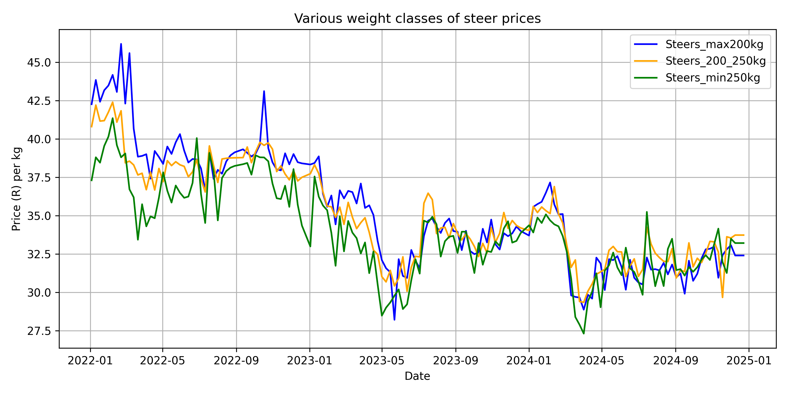
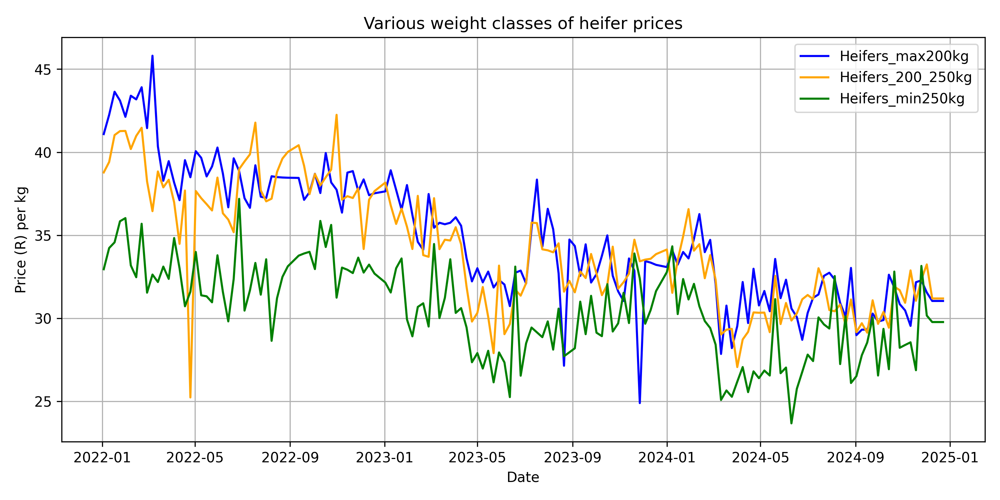
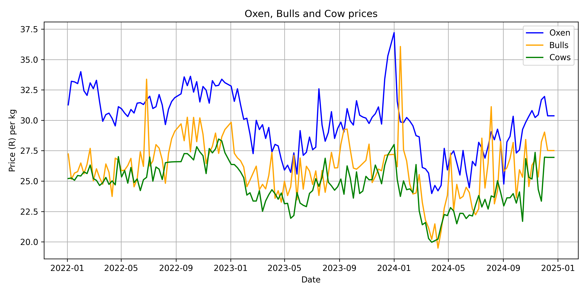

Historic data | Seasonal patterns | Correlation trends
Weekly cattle price data were collected from the VleisSentraal website, which publishes market prices for various classes of cattle sold in South African livestock markets. For this study, only cattle price data from the **Bushveld region** were collected, as this region encompasses the provinces of **Limpopo, Gauteng, Mpumalanga, and North West**, which correspond to the geographical extent of the rainfall data used in the analysis. Restricting the study to the Bushveld region ensured consistency between the cattle market data and the climatic variables incorporated into the forecasting models.
The dataset consists of weekly average prices expressed in South African Rand per kilogram (R/kg) and covers the study period from 2020 to 2025. Data were collected for multiple cattle categories, representing different weight classes and animal types commonly traded in the South African beef industry. These categories include lightweight, medium- weight, and heavyweight weaners, as well as other commercially significant classes of cattle.
To facilitate time series modelling, the data were organised into a weekly chronological format, with each observation corresponding to a single calendar week. The dataset was subsequently imported into Python, where the weekly price series were cleaned, validated, and aligned with the explanatory variables, including rainfall data extracted from the CHIRPS dataset. Missing observations were identified and handled where necessary to ensure a consistent weekly time series suitable for forecasting.
The VleisSentraal price data were selected because they are publicly available, updated regularly, and widely recognised within the South African livestock industry as a reliable indicator of prevailing cattle market prices. Consequently, the dataset provides a suitable foundation for analysing historical price movements and developing forecasting models capable of supporting decision-making within the livestock sector.
The historical cattle prices are presented according to animal type and weight class, including steers, heifers, oxen, bulls, and cows. Separating the data into these categories enables the underlying price trends and seasonal patterns within each market segment to be visualised more clearly. Examining the historical price movements provides insight into recurring seasonal cycles, market fluctuations, and long-term trends that influence cattle prices over time.



Understanding historical cattle price movements provides valuable insight into the behaviour and variability of livestock markets. However, the ability to accurately forecast future cattle prices could provide additional value to farmers and industry stakeholders by reducing uncertainty in an inherently unpredictable environment. Improved price predictions may support better decision-making regarding production planning, marketing strategies, and financial management.
Cattle prices are influenced by a complex combination of factors, including seasonal production cycles, climatic conditions, feed availability, market demand, input costs, and broader economic conditions. Therefore, incorporating relevant explanatory variables, such as rainfall patterns, may improve the understanding and prediction of cattle price fluctuations. Developing forecasting models that capture these relationships could contribute towards greater resilience and informed decision-making within the agricultural sector.